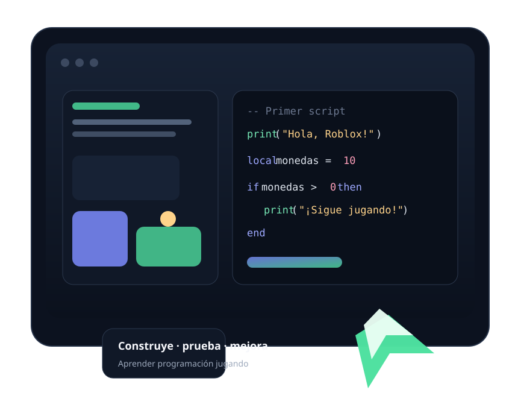

Fundamentos
Tu primer script
Output, comentarios, print(), objetos y propiedades.
Empieza con Luau, el lenguaje de scripting usado por Roblox Studio. Vas a aprender lógica, variables, condiciones, funciones y eventos mientras construyes pequeños sistemas de juego paso a paso.

Roblox Studio permite ver rápidamente el resultado de tu código dentro de un mundo 3D. Eso lo convierte en un excelente punto de entrada para comprender programación aplicada: escribes una instrucción, ejecutas el juego y observas qué cambió.
No necesitas experiencia previa. Cada módulo añade una idea nueva y la aplica dentro de Roblox.
Output, comentarios, print(), objetos y propiedades.
Texto, números, booleanos y datos que cambian durante una partida.
Usa if, elseif y else para crear reglas y respuestas del juego.
Agrupa instrucciones para no repetir código y mantenerlo organizado.
Haz que el código reaccione al tocar partes, hacer clic o entrar al juego.
Checkpoint, lava, monedas y contador sencillo.
En Roblox Studio, un Script contiene instrucciones que el juego ejecuta. Para comenzar, abre ServerScriptService, crea un Script y escribe:
print() muestra un mensaje en la ventana Output.
Las comillas indican que el contenido es texto.
Ejecuta el juego y observa el resultado.
-- Mi primer script en Roblox
print("¡Hola, Roblox!")
local jugador = "Aprendiz"
local monedas = 10
print(jugador .. " tiene " .. monedas .. " monedas")Modifica el nombre del jugador y el número. Ejecuta el juego otra vez y comprueba el resultado en Output.
Al finalizar los módulos tendrás las bases para unir lógica, eventos y objetos en una experiencia sencilla.
Detecta cuando un jugador toca una parte y reinicia su personaje.
Suma puntos al recoger objetos y actualiza un contador.
Guarda el progreso del jugador dentro del recorrido.
Muestra información importante sin llenar la pantalla de elementos.
Ese es el ciclo básico que usarás durante todo el curso para aprender programación de videojuegos.